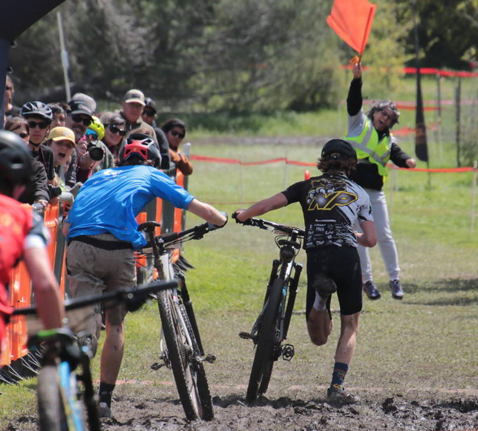
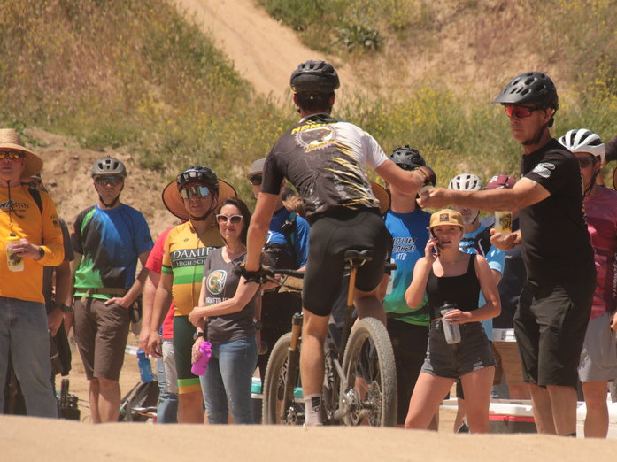

Newbury Park Mountain Bike Team Newsletters and Race Reports | Reference Material | Race Volunteering
Race Volunteering¶
Background¶
Our league races are almost entirely volunteer-run. There are only a few paid league staffers. The league generally wants one parent for each rider that races to volunteer at least once at a regular season race. That is once per season, not per race weekend. In the past each parent involved in our team signed up on their own for a league race volunteer assignment. This season and last the Newbury Park team (including our composite teams) signed up to cover all shifts of the Finish Line Support assignments at every regular season race (this does not include the Championship race). The advantage of doing this is that fewer volunteers are expected of us overall and the team gets a preferential pit-zone location near the race start/finish line.
Finish Line support is not a bad volunteering job. There are worse, such as working in the parking lots. Finish Line usually involves directing riders away from the race course after they finish and keeping bystanders away. It is also a good way to see the finish of the races.
{kind=link}
Volunteer coordinator Gisella Stanley getting caught up in the excitement of a foot race at a muddy finish line a few years ago at Cachuma. She had one of the best views in the house.
This means that the league does not want individual parents from our teams to sign up for volunteer assignments using the league system. Instead, the NP team is using signupgenius to keep track of our team volunteer crews. I have the links to our team sign-up system included below.
Expectations¶
The expectation is that every one of our riders that races in the regular season has an adult that covers at least one Finish Line volunteer shift. (It does not matter how many times the kids race.) We usually have about 80 kids race in total, so this should not be difficult. In signupgenius, the league volunteer shifts are those labeled FINISH LINE. The team has 60 volunteer slots to fill across the 5 regular season race weekends and those slots must be filled. In addition, there will most likely be 8 slots to fill at the Championships weekend.
Note that the parents of each rider do not necessarily need to volunteer themselves. They could have some other adult sign up to cover their rider (league volunteers must be 18 or over). Parents and riders need to arrange that among themselves. Make sure the correct rider gets credited in signupgenius.
Parents are welcome to sign-up for other league volunteer assignments, but this will not count towards our required Finish Line volunteer slots or any of the volunteer incentives (the big incentive is a weekend of lodging in Mammoth; and there have been others in the past, such as gift card giveaways).
Often the league is short on volunteers and will not start the races until certain shifts are covered. Since our Finish Line positions are key to the safety of the race, those slots must be filled for races to start.
We are required to provide a list of volunteers a week before each race, so signups cannot happen last minute (although we won’t turn them down).
Non-League Volunteering¶
{kind=link}
Our team also requires volunteers at races to cover non-league team-specific roles. These are the items in signupgenius that are not labeled as FINISH LINE. This is separate from league race volunteering. Volunteering to help at our team feed zone with coach Joe Ventrone or helping with the team dinners does not fulfill our league volunteering requirements, however these roles are still very important.
An example of feed zone support. A parent is providing a water bottle to one of our racers. Do not worry, coach Joe Ventrone will teach you how to do this. It is not difficult, and as you can see in the photo, coach Joe is waiting as a backup in case the first hand-off does not go as planned. Both athletes and adults are welcome to help out in the feed zone.
Issues¶
Last season the team required 222 volunteer positions between Finish Line support and our team tasks. 5 team parents volunteered for at least 20 shifts each, so they covered about half of what was needed on their own. There were also two others that covered 10 slots each. It is great that these individuals volunteered so much, but relying on just a few is not the way this should work.
Another issue we are dealing with is that middle school parents want to volunteer on Saturdays since many of them only come down for the day. This makes sense. However, we also find that high school parents want to volunteer on Saturdays because they want to be able to watch their kids race on Sundays. This means we are often short on volunteers on Sundays and need to scramble to find them.
Reminder - the finish line is a good place to watch your kids finish their race.
Sign-up Links¶
The following information and links were sent in the email from volunteer coordinator Gisella Stanley:
All Volunteers need to sign the SoCal Waiver, below is the link for our team only. Please sign before February 15.
NEWBURY_PARK_WAIVER: https://signup.com/go/vvWzZTV
Links for each race:
First Race - Lake Perris - Beach to Boulders - February 22-23
https://www.signupgenius.com/go/10C0B4BA5AD2AA6FEC52-54153011-first
Second Race - Vail Lake Challenge - March 15-16
https://www.signupgenius.com/go/10C0B4BA5AD2AA6FEC52-52449495-lake
Third Race - Cachuma - March 29-30
https://www.signupgenius.com/go/10C0B4BA5AD2AA6FEC52-54153022-first
Fourth Race - Victory at Vail - April 26-27
https://www.signupgenius.com/go/10C0B4BA5AD2AA6FEC52-54154907-fourth
Finals - Keysville - May 10-11
https://www.signupgenius.com/go/10C0B4BA5AD2AA6FEC52-54155027-finals
Once we get closer to the Championship (near the end of May), we will be sending you a sign-up for that race.
We understand that things might happen from now until the race and you will need to cancel your volunteer sign-up. Please do your best to find somebody else to cover your spot, but if you cannot, let Gisella know.
If you have any questions, please do not hesitate to contact me (Gisella) via text (310) 351-7465 or email at npmbtvoluntcoord@gmail.com